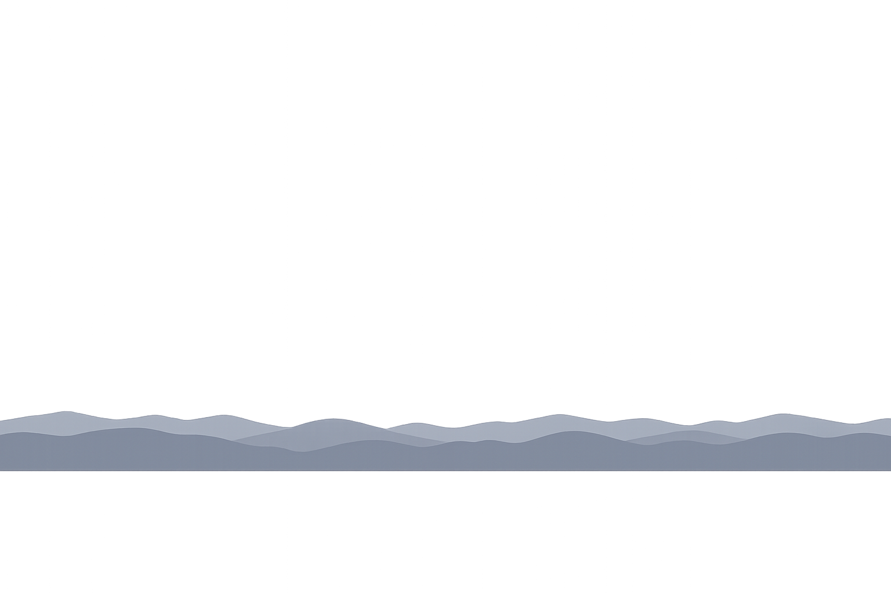
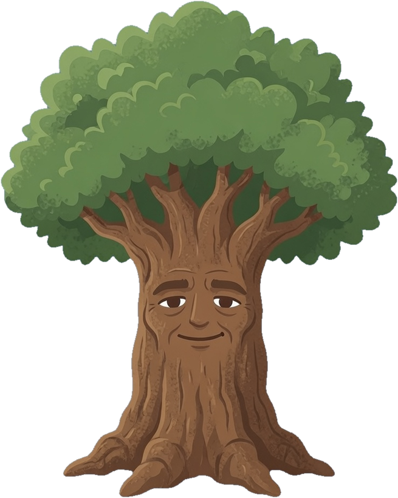

harufocus
📊
⚙
로그인
‹
오늘
›
큰 타임라인
모자이카


최근 7일을 한눈에. 색은 영역, 칸은 시간(6시–24시).
할일
매트릭스
루틴
물통
할 일
별표로 위로 · 체크로 완료 ·
→ 타임라인
으로 오늘 일정에 배치.
추가
매트릭스
중요도와 급함으로 네 칸에 나눠 담아요.
루틴
요일마다 반복되는 일 · 왼쪽 원으로 오늘 체크 · 요일 칩으로 반복 요일 편집.
추가
물통
집중한 시간이 물통을 채워요. 옆면을 누르면 그 영역이 앞으로 돌아와요.
‹
오늘
›
☁️
10 / 10
타임라인
할일
매트릭스
루틴
물통
✕
로그인
harufocus 계정으로 로그인하면 아이폰·아이패드와 같은 데이터를 봐요.
로그인
계정이 없나요?
회원가입
✕
작업 편집
분류
길이
타임라인 배치 (날짜 · 시각)
빼기
매트릭스
별표
완료
하위 작업
추가
삭제
▶ 집중
저장
00:00
일시정지
끝내기
✕
설정
하루 집중 목표 (분)
기상 시각
취침 시각
기상·취침 시각이 타임라인에 보이는 시간대를 정해요.
저장
✕
통계